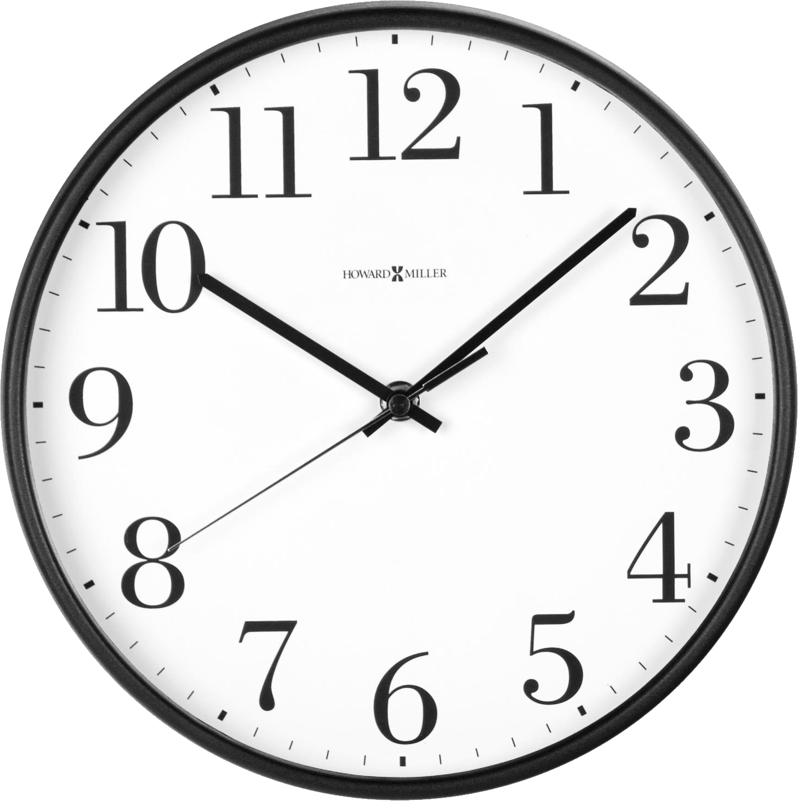

Quiz is loading...
Lookin Lookin on
君だけの
Shakin shakin on
オリジナル
Rockin Rockin on
何度でも
Baby going on!
1 / 200questions
This page in developement, added a new search navigation
Toggle timer

Navigation
Search
Your answer
Next
Previous
Score
Quiz Results
Name
Save score
Clear score
Restart
Quit
Scores: 5 of your highest scores will display